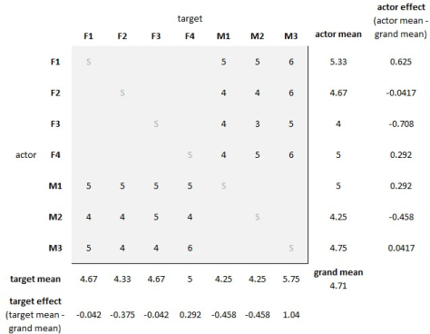

本研究主要关注个体的自我评价是否与伴侣选择有关，这些自我评价的准确性是否与择偶结果（mating outcomes）有关
1 配偶标准和挑剔
- 社会交换理论认为人们会选择最有价值的伴侣
- 选择最有价值伴侣的前提是正确识别自己的价值
- 高价值个体期望和相同价值的伴侣配对，因此会提高标准
- 关于自我评价和伴侣选择关系的研究，大多聚焦于自我陈述而不是实际行为，这两者往往是脱节的
- 本研究，将标准界定为：个体在潜在伴侣身上所愿意接纳的配偶价值水平，该水平通过个体与真实潜在对象约会的实际意愿来体现
- 挑剔性界定为：个体所愿意接纳的潜在伴侣人数（不一定要求同时）
- 亲代投资理论：在抚养后代上投入更多资源的一方在择偶时也会更加挑剔
- 女性投入更多，可能更挑剔。但因为人类是相互择偶，这种情况并没有其他动物那么明显。
2 准确性和自我提升
- 高估自身价值会造成资源浪费；低估自身价值会得到次优选择
- 自我提升如果可以获得更高的成功率，那么也不会造成资源浪费
- 速配研究中，倾向选择自我提升者作为短期伴侣，而不是长期
- 自我提升者对长期伴侣更挑剔
3 本研究
- 1354名被试，2317次速配交互，大样本可以澄清前人研究中的不确定
- 检验自我感知的配偶价值能否预测其择偶标准和挑剔性
- 评估自我评价准确性
- 自我提升是否与个体所获接受次数、个体达成的相互匹配数量以及这些匹配的质量相关
4 方法
- 样本是2010到2019年收集的
- 近期一项元分析证明：自我提升对零相识情境下人际知觉影响的估计效应量为\(r = 0.11\)
- G*Power计算得到\(N=1354\)，\(\alpha=0.05\)情况下，\(r = 0.11\)时的统计功效是96%
4.1 被试
- 1354大一心理学学生；52%女性；年龄19.5±2.8
- 要求是异性恋和英语母语者，完成实验后会获得学分奖励
- 匹配质量变量需要被试至少有过一次成功匹配；择偶标准变量需要被试至少接受一位潜在伴侣
- 变量缺失时在相关分析中删除该被试
4.2 测量
- 自我评分：吸引力的自我评分（3道），分别是面部、身体和个性的评分，7点量表（低于标准到高于标准）
- 伴侣评分：对互动对象的吸引力评分，也是面部、身体和个性三个方面，7点量表（低于标准到高于标准）
- 计算变量：具体情况见 表 1
- 最低、最高和平均标准使用目标被试自己的评分，因为择偶是主观的
- 匹配质量选择其他被试的评分，因为这个指标应该是客观的
| 变量 | 描述 | 计算方法 |
|---|---|---|
| 准确性（Accuracy） | 个体对自身配偶价值的感知，与他人对其配偶价值评分之间的接近程度 | 个体自我评分与他人给定评分的绝对差值（数值越接近零，表示准确性越高） |
| 方向性准确性（Directional Accuracy） | 相较于他人的评定，个体对自身配偶价值的高估或低估程度 | 个体自我评分与他人给定评分的方向差值（自评—他评，正值代表高估，数值越接近零越准确） |
| 自我提升（Self-enhancement） | 校正了被试和伴侣双方“行动者效应”后的方向性准确性指标 | 校正行动者效应后的自我评分，减去校正行动者效应后的他人评分（数值越接近零越准确） |
| 挑剔性（Choosiness） | 对潜在约会对象说“不”的倾向 | “不”回应数量占总选择机会数的比例（数值越大表示越挑剔） |
| 最低标准（Minimum Standard） | 被试表示“接受”（说“是”）的所有对象中，最低的配偶价值 | 所有接受对象中，最低的配偶价值评分（使用目标被试自身的评分） |
| 最高标准（Maximum Standard） | 被试表示“接受”（说“是”）的所有对象中，最高的配偶价值 | 所有接受对象中，最高的配偶价值评分（使用目标被试自身的评分） |
| 平均标准（Mean Standard） | 被试表示“接受”（说“是”）的所有对象的平均配偶价值 | 所有接受对象的配偶价值评分的平均值（使用目标被试自身的评分） |
| 潜在匹配数量（Potential Match Quantity） | 向目标被试说“是”（愿意约会）的潜在伴侣人数 | 对被试说“是”的人数，占被试所见面总人数的比例 |
| 匹配数量（Match Quantity） | 个体达成的相互匹配（互选）的数量 | 目标被试匹配成功的对象人数，占其所见面总人数的比例 |
| 匹配质量（Match Quality） | 被试所匹配对象的平均配偶价值（客观指标） | 被试匹配成功的对象所获配偶价值评分的平均值（剔除目标被试自身的评分，使用其他被试的评分） |
4.3 程序
- 每次速配，4男4女参加，每个速配站之间相隔1.7m防止干扰
- 约会前
- 男女分别在两个房间
- 填写保密保证和知情同意书后，在ipad上预问卷（人口统计学信息和自评）
- 填写完进入房间和第一个对象进行匹配
- 互动
- 进行3分钟自我介绍和交流后，在ipad上填写对对方的评价（相互保密）
- 主试确定填写完成后，选择一种性别轮换到下一个，性别在各组间得到平衡
- 性别不平衡时，多出的被试安静等待下一组
- 约会后
- 完成后测，包含一些和本研究无关的题目
- 给出一个简易报告并感谢
4.4 社会关系分析计划
- 使用社会关系分析（Social Relations Analysis）来计算评估准确性与自我提升
- 本研究是完全区组设计（full-block design），每一组中男性对所有女性评分，女性也对所有男性评分
- 每个评分可分解为三部分
- 被试的行动者效应（actor effect）：被试自身的倾向，被试有多容易觉得别人有吸引力，或者倾向于如何评价伴侣
- 对方的对象效应（partner effect）：被评价的对象本身的总体特征，也就是这个人通常会被别人觉得有多有吸引力
- 双方的关系效应（relationship effect）：被试对该特定对象的评分，在多大程度上高于或低于行动者效应与伙伴效应所共同预期的水平
- 参考@Kenny_et_al_2006 的公式分别计算出被试和对象的行动者效应得分，具体计算见@fig-1

- 对被试的自我评价和他人对被试的评价进行校正(Humberg et al., 2018; Kenny et al., 2006)
- 校正后的自我感知配偶价值 = 自我感知配偶价值 − 被试的行动者效应（自我评价）
- 校正后的接收配偶价值 = 被试接收到的配偶价值 − 对象的行动者效应（现实标准）
- 校正后的接收配偶价值作为因变量，校正后的自我感知配偶价值和性别及其交互作为自变量，检验准确性（表 5）
- 性别编码：男性 = 0；女性 = 1
- 使用基于条件的回归分析（Condition-Based Regression Analysis）检验自我提升（贬损）对结果变量的影响(Humberg et al., 2018)
- 有效分离自我提升和积极自我观（positivity of self-view）
\[ \text{结果变量} = c_0 + c_1 \times \text{自我评价} + c_2 \times \text{现实标准} + \varepsilon \]
- 自我提升：
\[ abs = \left| c_1 - c_2 \right| - \left|c_1 + c_2\right| > 0 \quad \text{且} \quad (c_1 - c_2) > 0 \]
- 自我贬损：
\[ abs = \left| c_1 - c_2 \right| - \left|c_1 + c_2\right| > 0 \quad \text{且} \quad (c_1 - c_2) < 0 \]
- 要检验自我提升对结果变量的影响，\(abs\)一定要显著，\(c_1 - c_2\)数值上成立
5 结果
5.1 零阶相关
| 变量 | 1 | 2 | 3 | 4 | 5 | 6 | 7 | 8 | 9 | 10 |
|---|---|---|---|---|---|---|---|---|---|---|
| 1. 自我感知配偶价值 | — | |||||||||
| 2. 接收配偶价值 | .15*** | — | ||||||||
| 3. 校正后自我感知配偶价值 | .76*** | .29*** | — | |||||||
| 4. 校正后接收配偶价值 | .18*** | .87*** | .14*** | — | ||||||
| 5. 最低标准 | .15*** | .06 | -.13*** | .19*** | — | |||||
| 6. 最高标准 | .15*** | -.02 | -.27*** | .18*** | .59*** | — | ||||
| 7. 平均标准 | .17*** | .02 | -.23*** | .20*** | .90*** | .88*** | — | |||
| 8. 挑剔性 | -.02 | .09*** | .29*** | -.06* | .28*** | -.26*** | .02 | — | ||
| 9. 匹配数量 | .08*** | .35*** | -.05* | .40*** | -.11*** | .10*** | -.01 | -.56*** | — | |
| 10. 潜在匹配数量 | .10*** | .68*** | .17*** | .61*** | .05 | .03 | .05 | .05* | .56*** | — |
| 11. 匹配质量 | .13*** | .10*** | .17*** | .34*** | .33*** | .22*** | .31*** | .13*** | -.00 | .08* |
| 变量 | 男性 | 女性 | 总体 | 最小值 | 最大值 | α |
|---|---|---|---|---|---|---|
| 自我感知配偶价值（1–7） | 4.73(0.74)** | 4.60(0.77) | 4.66(0.76) | 1.00 | 6.67 | .68 |
| 接收到的配偶价值（1–7） | 4.51(0.78)*** | 4.75(0.72) | 4.63(0.76) | 2.00 | 6.67 | .80 |
| 方向性准确性（−6到+6） | 0.22(0.94)*** | −0.15(1.00) | 0.03(0.99) | −4.11 | 3.33 | — |
| 准确性（0–6） | 0.76(0.60) | 0.79(0.63) | 0.78(0.61) | 0.00 | 4.11 | — |
| 自我提升 | 0.00(1.10) | 0.06(1.13) | 0.03(1.11) | −4.11 | 3.87 | — |
| 挑剔性（0–1） | 0.49(0.34)*** | 0.58(0.33) | 0.53(0.34) | 0.00 | 1.00 | — |
| 最低标准（1–7） | 5.04(0.67)* | 4.95(0.74) | 5.00(0.71) | 2.00 | 7.00 | — |
| 最高标准（1–7） | 5.59(0.65)*** | 5.43(0.71) | 5.52(0.68) | 2.00 | 7.33 | — |
| 平均标准（1–7） | 5.31(0.58)** | 5.19(0.65) | 5.25(0.62) | 2.00 | 7.00 | — |
| 匹配数量（比例；0–1） | 0.22(0.26) | 0.23(0.27) | 0.23(0.26) | 0.00 | 1.00 | — |
| 匹配质量（1–7） | 4.90(0.69)* | 4.77(0.74) | 4.83(0.72) | 2.33 | 6.67 | — |
显著性标记表示男性与女性均值的独立样本\(t\)检验结果
5.2 标准和挑剔性
- 自我感知配偶价值和对潜在伴侣的配偶价值标准显著正相关（表 4）
- 自我感知配偶价值对挑剔性没有显著影响
- 最低标准和平均标准中，在女性中自我感知配偶价值和配偶价值标准的关系可能更强
- 给他人的评分和给自己的评分之间无显著相关（\(r = 0.05,p = 0.051\)），排除了单纯喜欢给高分这个原因（这个相关是同时包括匹配成功和不成功的）
| 结果变量 | 预测变量 | β [95% CI] | p |
|---|---|---|---|
| 最低标准 | 自我感知配偶价值 | 0.15 [0.09, 0.21] | <.001 |
| 性别 | -0.05 [-0.11, 0.01] | .077 | |
| 交互 | 0.07 [0.01, 0.13] | .024 | |
| 平均标准 | 自我感知配偶价值 | 0.17 [0.10, 0.23] | <.001 |
| 性别 | -0.09 [-0.15, -0.03] | .004 | |
| 交互 | 0.07 [0.01, 0.13] | .022 | |
| 最高标准 | 自我感知配偶价值 | 0.15 [0.09, 0.21] | <.001 |
| 性别 | -0.11 [-0.17, -0.05] | <.001 | |
| 交互 | 0.05 [-0.01, 0.11] | .124 | |
| 挑剔性 | 自我感知配偶价值 | -0.01 [-0.06, 0.04] | .712 |
| 性别 | 0.13 [0.08, 0.19] | <.001 | |
| 交互 | -0.04 [-0.09, 0.02] | .180 |
5.3 准确性
- 表 5 表明：
- 自我评价具有一定程度的准确性，因为自我感知配偶价值和接收配偶价值显著正相关
- 分组的检验证明：男性的自我评价可能比女性更准确（男性组校正后自我感知配偶价值系数更大）
| 结果变量 | 预测变量 | β [95% CI] | p |
|---|---|---|---|
| 校正后接收配偶价值 | 校正后自我感知配偶价值 | 0.13 [0.08, 0.19] | <.001 |
| 性别 | -0.02 [-0.04, 0.07] | .536 | |
| 交互 | -0.06 [-0.11, -0.01] | .028 |
5.4 自我提升和匹配结果
- 表 6 表明：
- 潜在匹配数量和匹配质量不存在自我提升效应
- 匹配数量存在显著的负向自我提升效应，低估自身配偶价值的人比高估者获得了更多的互选成功匹配
- 挑剔性存在显著的正向自我提升效应，高估者比低估者更为挑剔
- 分性别进行检验结果一致
| 结果变量 | 预测变量 | 系数 [95% CI] | p | 自我提升效应 |
|---|---|---|---|---|
| 潜在匹配数量 | 校正后自我感知配偶价值（c₁） | 0.03 [0.02, 0.04] | <.001 | |
| 校正后接收配偶价值（c₂） | 0.27 [0.25, 0.29] | <.001 | ||
| abs | -0.06 [-0.08, -0.04] | 1.0 | 负向 | |
| 匹配数量 | 校正后自我感知配偶价值（c₁） | -0.03 [-0.04, -0.02] | <.001 | |
| 校正后接收配偶价值（c₂） | 0.15 [0.13, 0.17] | <.001 | ||
| abs | 0.05 [0.03, 0.07] | <.001 | 负向 | |
| 匹配质量 | 校正后自我感知配偶价值（c₁） | 0.12 [0.07, 0.18] | <.001 | |
| 校正后接收配偶价值（c₂） | 0.32 [0.24, 0.41] | <.001 | ||
| abs | -0.24 [-0.36, -0.12] | .999 | 负向 | |
| 挑剔性 | 校正后自我感知配偶价值（c₁） | 0.10 [0.08, 0.11] | <.001 | |
| 校正后接收配偶价值（c₂） | -0.05 [-0.07, -0.03] | <.001 | ||
| abs | 0.10 [0.06, 0.14] | <.001 | 正向 |
6 讨论
6.1 标准和挑剔性
- 女性比男性更挑剔，符合亲代投资理论
- 男性最低标准比女性高，可能是因为女性接收的评价更高
- 自我感知配偶价值正向预测最低标准，符合社会交换理论和前人研究
- 择偶标准不是选择高于某一值的，因为自我感知配偶价值和挑剔性关系不显著，更可能是双方价值差异过大的也不考虑
- 本研究样本量大，但每场速配样本太小，模型解释力不足，不过可以提供更精准的估计
- 整体来看，个体会利用自我评价来为潜在伴侣设定配偶价值标准
- 匹配假说：配偶偏好随个体自身配偶价值而变化，会寻找价值相似的
- 吸引力是普遍的，低价值的也会觉得高价值的有吸引力，假说不成立
- 吸引力低的拒绝吸引力高的，是一种自我保护
- 依恋安全感也很重要
- 匹配假说：配偶偏好随个体自身配偶价值而变化，会寻找价值相似的
6.2 准确性
- 自我感知配偶价值和他人评价显著弱相关，符合社会交换理论：这是进行选择的前提
- 解释效力较低，和前人研究一致
6.3 自我提升和匹配结果
- 自我提升并不会显著增加匹配质量
- 高估自己的会更挑剔，但匹配成功更少
- 未区分长期和短期，研究结果和长期的更一致
- 只考察了自我评价和他人评价不一致时的结果，未能考察自我提升对他人评价的影响
- 研究中他人评价本身就是受自我提升影响后的结果，混杂了自我提升造成的所有影响
- 高估者比低估者更挑剔，互选匹配数量更少，但匹配质量无差异
- 研究需要考虑更多的结果，而不是单一结果
6.4 不足和未来方向
- 不足
- 被试以年轻、受过教育、社会经济地位较高且以英语为母语的大学生为主
- 3分钟速配时间有限
- 未区分长期和短期
- 不能理清不选择高标准是因为：他可能看不上我（理性）还是我单纯不喜欢他（感性）
- 结论
- 高统计效力
- 自我评价与择偶标准相关，对伴侣的兴趣集中在与自己配偶价值相差不远的范围内
- 高估自身配偶价值的个体并未比低估者获得更多的兴趣，但他们更为挑剔，获得的匹配数量更少。
- 本研究结果支持社会交换理论和匹配假说，并与自我提升促进积极社会印象和结果的研究发现形成对比
参考文献
Harper, K. T., Stanley, F., Sidari, M. J., Lee, A. J., & Zietsch, B. P. (2024). The role of accurate self-assessments in optimizing mate choice. Personality and Social Psychology Bulletin, 50(4), 587–596. https://doi.org/10.1177/01461672221135955
Humberg, S., Dufner, M., Schönbrodt, F. D., Geukes, K., Hutteman, R., Zalk, M. H. W. van, Denissen, J. J. A., Nestler, S., & Back, M. D. (2018). Enhanced versus simply positive: A new condition-based regression analysis to disentangle effects of self-enhancement from effects of positivity of self-view. Journal of Personality and Social Psychology, 114(2), 303–322. https://doi.org/10.1037/pspp0000134
Kenny, D. A., Kashy, D. A., & Cook, W. L. (2006). Dyadic data analysis. The Guilford Press.